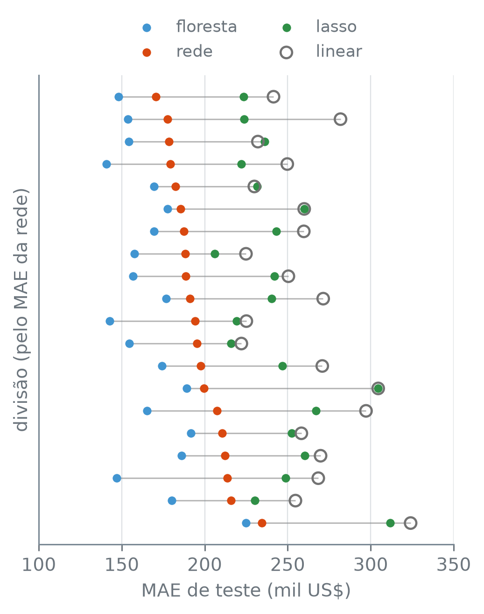
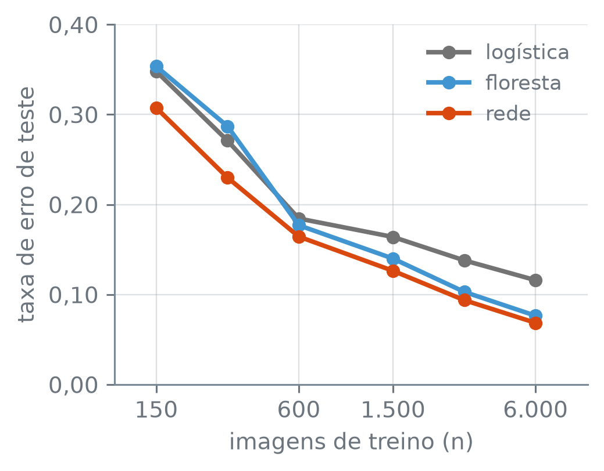

def numero_br(valor, casas=2):
texto = f"{valor:,.{casas}f}"
texto = texto.replace(",", "_").replace(".", ",").replace("_", ".")
return texto.replace("-", "−")
def sem_casas(valor, posicao=None):
return numero_br(valor, 0)Quando Usar Deep Learning
Nota
Esta seção corresponde à seção 10.6 de James et al. (2023).
Nas imagens de dígitos da seção 14.2, uma rede com duas camadas escondidas errou bem menos que a regressão logística. Deve-se então pedir uma rede para todo problema com dados? Nos jogadores de beisebol, com poucas centenas de linhas e 19 colunas, a rede pede padronização dos preditores e da resposta, um limite de épocas, uma busca por validação cruzada e uma semente. Esse trabalho compensa? Contra quais modelos a rede deve ser comparada para saber?
O profundo de deep learning, aprendizado profundo, se refere ao número de camadas: uma rede com muitas camadas escondidas é profunda, seja ela densa, como as deste capítulo, seja de outro tipo. Com uma ou duas camadas escondidas, as redes deste capítulo têm poucas camadas, mas a pergunta sobre quando usá-las é a mesma que se faz para as profundas: contra modelos mais simples, a rede ganha?
A função numero_br escreve os números com a pontuação brasileira, e sem_casas os escreve sem casas decimais:
Quatro modelos numa divisão
A tabela Hitters traz as estatísticas de 1986 dos jogadores das grandes ligas e o salário de 1987, em milhares de dólares. Descartados os jogadores sem salário e trocadas as colunas de texto por indicadoras, um terço dos jogadores fica para teste:
import pandas as pd
from sklearn.model_selection import train_test_split
hitters = pd.read_csv("dados/Hitters.csv").dropna()
y = hitters["salario"]
X = pd.get_dummies(hitters.drop(columns="salario"), drop_first=True, dtype=float)
print("jogadores:", len(X))
print("colunas:", X.shape[1])
treino_X, teste_X, treino_y, teste_y = train_test_split(
X, y, test_size=1/3, random_state=14)
print("treino:", len(treino_X))
print("teste:", len(teste_X))jogadores: 263
colunas: 19
treino: 175
teste: 88São 175 jogadores de treino e 88 de teste. Quatro modelos disputam a previsão do salário:
- a regressão linear por mínimos quadrados, com as 19 colunas;
- o lasso da seção 11.4, com as colunas padronizadas e o
alphaescolhido por validação cruzada de cinco grupos, numa grade de 61 valores de 0,001 a 1.000, igualmente espaçados em escala log; - a rede de uma camada escondida da seção 14.4, com preditores e resposta padronizados, e o número de unidades e o
alphaescolhidos por validação cruzada na mesma grade de lá: 16 ou 64 unidades e sete valores dealpha, de 0,1 a 100; - a floresta aleatória da seção 13.3, com 200 árvores e \(m = 4\) colunas sorteadas por divisão, perto de \(\sqrt{19}\), a escolha usual, e as colunas como estão, sem padronizar nem buscar nada.
A rede, com centenas de pesos, erra menos que o lasso, que fica com poucos coeficientes? E a floresta, que não pediu padronização nem busca? Cada modelo se ajusta no treino, prevê os 88 jogadores de teste e tem o seu MAE medido. Primeiro, a regressão linear:
from sklearn.linear_model import LinearRegression
from sklearn.metrics import mean_absolute_error
linear = LinearRegression()
linear.fit(treino_X, treino_y)
previsto_linear = linear.predict(teste_X)
print("MAE da linear:", sem_casas(mean_absolute_error(teste_y, previsto_linear)))
print("coeficientes, com o intercepto:", linear.coef_.size + 1)MAE da linear: 232
coeficientes, com o intercepto: 20O lasso e a rede escolhem a configuração por validação cruzada. As duas buscas usam os mesmos cinco grupos e o MAE como critério; o GridSearchCV faz a busca quando recebe o fit e depois prevê com o melhor candidato, reajustado com todo o treino:
import numpy as np
from sklearn.linear_model import Lasso
from sklearn.model_selection import GridSearchCV, KFold
from sklearn.pipeline import Pipeline
from sklearn.preprocessing import StandardScaler
grupos = KFold(5, shuffle=True, random_state=14)
metrica = "neg_mean_absolute_error"
grade_lasso = np.logspace(-3, 3, 61)
lasso = Pipeline([
("escala", StandardScaler()),
("lasso", Lasso(max_iter=100_000)),
])
busca_lasso = GridSearchCV(lasso, {"lasso__alpha": grade_lasso}, cv=grupos,
scoring=metrica)
busca_lasso.fit(treino_X, treino_y)
previsto_lasso = busca_lasso.predict(teste_X)
print("MAE do lasso:", sem_casas(mean_absolute_error(teste_y, previsto_lasso)))
coeficientes = busca_lasso.best_estimator_[-1].coef_
print("colunas com coeficiente diferente de zero:", (coeficientes != 0).sum(),
"de", coeficientes.size)MAE do lasso: 236
colunas com coeficiente diferente de zero: 8 de 19Lasso(max_iter=100_000) — o lasso; o alpha dele é \(\lambda/(2n)\), na forma da seção 11.4, e max_iter é o limite de iterações do método de ajuste.
A rede é a da seção 14.4, com as duas escalas no Pipeline e a busca nas 16 ou 64 unidades e nos sete valores de alpha:
from sklearn.compose import TransformedTargetRegressor
from sklearn.neural_network import MLPRegressor
mlp = MLPRegressor(hidden_layer_sizes=(16,), max_iter=2000, random_state=14)
rede = Pipeline([
("escala", StandardScaler()),
("rede", TransformedTargetRegressor(mlp, transformer=StandardScaler())),
])
grade_rede = {
"rede__regressor__alpha": np.logspace(-1, 2, 7),
"rede__regressor__hidden_layer_sizes": [(16,), (64,)],
}
busca_rede = GridSearchCV(rede, grade_rede, cv=grupos, scoring=metrica)
busca_rede.fit(treino_X, treino_y)
previsto_rede = busca_rede.predict(teste_X)
print("MAE da rede:", sem_casas(mean_absolute_error(teste_y, previsto_rede)))
escolha = busca_rede.best_params_
print("unidades escolhidas:", escolha["rede__regressor__hidden_layer_sizes"][0])
print("alpha escolhido:", numero_br(escolha["rede__regressor__alpha"]))
ajustada = busca_rede.best_estimator_[-1].regressor_
pesos_rede = 0
for camada in ajustada.coefs_ + ajustada.intercepts_:
pesos_rede = pesos_rede + camada.size
print("pesos da rede, com os vieses:", pesos_rede)MAE da rede: 178
unidades escolhidas: 16
alpha escolhido: 3,16
pesos da rede, com os vieses: 337A floresta não passa por busca nem por padronização:
from sklearn.ensemble import RandomForestRegressor
floresta = RandomForestRegressor(n_estimators=200, max_features=4,
random_state=14)
floresta.fit(treino_X, treino_y)
previsto_floresta = floresta.predict(teste_X)
print("MAE da floresta:",
sem_casas(mean_absolute_error(teste_y, previsto_floresta)))MAE da floresta: 154RandomForestRegressor(n_estimators, max_features, random_state) — a floresta aleatória de regressão: n_estimators árvores, cada uma numa amostra bootstrap, com max_features colunas sorteadas como candidatas em cada divisão; random_state fixa os sorteios.
Os quatro lado a lado, com o MAE e o \(R^2\) de teste:
from sklearn.metrics import r2_score
previstos = {
"linear": previsto_linear,
"lasso": previsto_lasso,
"rede": previsto_rede,
"floresta": previsto_floresta,
}
maes_teste = {}
r2_teste = {}
for nome, previsto in previstos.items():
maes_teste[nome] = mean_absolute_error(teste_y, previsto)
r2_teste[nome] = r2_score(teste_y, previsto)
tabela = pd.DataFrame({"MAE": maes_teste, "R²": r2_teste})
print(tabela.to_string(formatters={"MAE": sem_casas, "R²": numero_br}))
print("menor MAE:", tabela["MAE"].idxmin()) MAE R²
linear 232 0,48
lasso 236 0,44
rede 178 0,65
floresta 154 0,65
menor MAE: florestaNesta divisão, a busca escolhe a mesma rede da seção 14.4, com 16 unidades e alpha 3,16. Ela erra menos que a regressão linear e que o lasso: 178 mil dólares em média, contra 232 e 236. A floresta tem o menor MAE de teste, abaixo de 160. No \(R^2\), rede e floresta ficam a menos de 0,01 uma da outra.
O lasso ficou com 8 das 19 colunas, 9 pesos contando o intercepto (8 + 1), e a rede tem 337, contra os 20 da regressão linear. A floresta não se resume a uma lista de pesos: são 200 árvores, cada uma com as suas divisões.
Vinte divisões
São 88 jogadores de teste numa divisão só. Com outro sorteio de treino e teste, a ordem dos quatro muda? Com random_state de 0 a 19, a conta da divisão acima se repete em 20 divisões: dividir, ajustar os quatro no treino, prever o teste e medir o MAE. O clone copia cada modelo da divisão acima com os mesmos parâmetros e sem o ajuste; o lasso e a rede refazem a sua busca por validação cruzada só com os jogadores de treino de cada divisão, e os jogadores de teste não entram em nenhuma escolha:
from sklearn.base import clone
modelos = {
"linear": linear,
"lasso": busca_lasso,
"rede": busca_rede,
"floresta": floresta,
}
maes = {}
alphas = {}
for semente in range(20):
tr_X, te_X, tr_y, te_y = train_test_split(X, y, test_size=1/3,
random_state=semente)
maes_da_divisao = {}
for nome, modelo in modelos.items():
novo = clone(modelo)
novo.fit(tr_X, tr_y)
previsto = novo.predict(te_X)
maes_da_divisao[nome] = mean_absolute_error(te_y, previsto)
if nome == "lasso":
alphas[semente] = novo.best_params_["lasso__alpha"]
maes[semente] = maes_da_divisao
maes = pd.DataFrame(maes).T
maes.index.name = "divisão"
alphas = pd.Series(alphas)
print("divisões:", len(maes))
print("alpha do lasso: menor da grade,", numero_br(grade_lasso.min(), 3),
"· escolhido em", (alphas == grade_lasso.min()).sum(), "de 20 divisões")
print("alpha do lasso: maior da grade,", numero_br(grade_lasso.max(), 0),
"· escolhido em", (alphas == grade_lasso.max()).sum(), "de 20 divisões")
na_ponta = alphas.idxmin()
print(f"divisão {na_ponta}: MAE do lasso", numero_br(maes.loc[na_ponta, "lasso"]),
"· da linear", numero_br(maes.loc[na_ponta, "linear"]))divisões: 20
alpha do lasso: menor da grade, 0,001 · escolhido em 1 de 20 divisões
alpha do lasso: maior da grade, 1.000 · escolhido em 0 de 20 divisões
divisão 11: MAE do lasso 304,53 · da linear 304,54Na ponta de cima da grade, a das penalidades mais fortes, o alpha do lasso não cai em nenhuma divisão. Na de baixo, cai em uma, a divisão 11: nela, a validação cruzada prefere a menor penalidade da grade, e o lasso tem praticamente o mesmo MAE da regressão linear, que é o lasso sem penalidade nenhuma: 304,53 contra 304,54.
A figura mostra os quatro MAE de teste de cada divisão numa linha. O que olhar é a ordem das cores dentro de cada linha, e se ela se repete de uma linha para a outra:
import matplotlib.pyplot as plt
cores = {"floresta": "C0", "rede": "C1", "lasso": "C2"}
ordem = maes.sort_values("rede").index
posicao = pd.Series(range(len(ordem), 0, -1), index=ordem)
fig, ax = plt.subplots(figsize=(3.8, 4.8))
altura = posicao[maes.index]
ax.hlines(altura, maes.min(axis=1), maes.max(axis=1), color="0.45",
linewidth=0.8, alpha=0.5, zorder=1)
for nome, cor in cores.items():
ax.scatter(maes[nome], altura, s=22, color=cor, label=nome, zorder=2,
linewidths=0)
ax.scatter(maes["linear"], altura, s=40, facecolors="none", edgecolors="0.45",
linewidths=1.2, label="linear", zorder=3)
ax.set_yticks([])
ax.set_ylabel("divisão (pelo MAE da rede)")
ax.set_xlabel("MAE de teste (mil US$)")
ax.xaxis.set_major_formatter(sem_casas)
ax.legend(loc="lower center", bbox_to_anchor=(0.5, 1.0), ncol=2)
plt.tight_layout()
plt.show()
Hitters, uma divisão por linha, ordenadas de cima para baixo pelo MAE da rede: floresta aleatória (azul), rede (laranja), lasso (verde) e regressão linear (círculo cinza vazado, que deixa ver o verde quando os dois quase coincidem). O traço cinza liga o menor ao maior MAE de cada divisão.
maes.sort_values("rede").index— os rótulos das divisões, do menor ao maior MAE da rede;posicaodá a cada divisão a sua altura no gráfico, a do menor MAE em cima.maes.min(axis=1),maes.max(axis=1)— o menor e o maior valor de cada linha, isto é, de cada divisão.ax.hlines(y, x0, x1)— um traço horizontal na alturay, dex0ax1, um por divisão.
Os números da figura, uma divisão por linha, com três distâncias: a do lasso à regressão linear, a da rede à floresta e a do melhor dos dois lineares à rede. Depois, o MAE médio das 20 divisões e, para quatro pares de modelos, em quantas divisões o primeiro erra menos:
lineares = maes[["lasso", "linear"]].min(axis=1)
por_divisao = pd.DataFrame({
"linear": maes["linear"],
"lasso": maes["lasso"],
"rede": maes["rede"],
"floresta": maes["floresta"],
"lasso − linear": maes["lasso"] - maes["linear"],
"rede − floresta": maes["rede"] - maes["floresta"],
"lineares − rede": lineares - maes["rede"],
})
mostra = por_divisao.map(sem_casas)
mostra["lasso − linear"] = por_divisao["lasso − linear"].map(numero_br)
print("MAE de teste:")
print(mostra.to_string())
print("menor distância da rede à floresta:",
sem_casas(por_divisao["rede − floresta"].min()))
print("menor distância dos lineares à rede:",
sem_casas(por_divisao["lineares − rede"].min()))
print("menor MAE:", sem_casas(maes.min().min()))
print("maior MAE:", sem_casas(maes.max().max()))
medias = pd.DataFrame({"MAE médio": maes.mean()})
print(medias.map(sem_casas).to_string())
print("menor média:", medias["MAE médio"].idxmin())
pares = [("rede", "linear"), ("rede", "lasso"), ("floresta", "rede"),
("lasso", "linear")]
for a, b in pares:
n = (maes[a] < maes[b]).sum()
print(f"divisões em que {a} erra menos que {b}: {n} de {len(maes)}")MAE de teste:
linear lasso rede floresta lasso − linear rede − floresta lineares − rede
divisão
0 271 240 191 177 −31,01 14 49
1 260 243 187 170 −16,56 18 56
2 271 247 198 174 −23,96 23 49
3 282 224 178 154 −58,07 24 46
4 260 260 185 178 0,05 8 75
5 270 260 212 186 −9,50 26 48
6 297 267 207 165 −30,04 42 60
7 250 242 189 157 −8,28 32 53
8 250 222 179 141 −27,59 39 43
9 225 219 194 143 −5,79 52 25
10 255 230 216 180 −24,34 36 15
11 305 305 200 189 −0,02 10 105
12 225 206 188 158 −18,83 31 18
13 241 224 171 148 −17,86 23 53
14 232 236 178 154 4,04 24 54
15 268 249 214 147 −19,55 67 35
16 230 232 182 169 1,68 13 47
17 222 216 195 155 −6,34 41 20
18 258 252 210 192 −5,83 19 42
19 324 312 235 225 −12,27 10 77
menor distância da rede à floresta: 8
menor distância dos lineares à rede: 15
menor MAE: 141
maior MAE: 324
MAE médio
linear 260
lasso 244
rede 196
floresta 168
menor média: floresta
divisões em que rede erra menos que linear: 20 de 20
divisões em que rede erra menos que lasso: 20 de 20
divisões em que floresta erra menos que rede: 20 de 20
divisões em que lasso erra menos que linear: 17 de 20maes[["lasso", "linear"]].min(axis=1)— em cada divisão, o menor MAE entre os dois lineares.
Na tabela, a rede erra menos que a regressão linear e que o lasso nas 20 divisões, por pelo menos 15 mil dólares em cada uma, e a floresta erra menos que a rede em todas, por mais de 5 mil dólares em cada uma. Entre os lineares, a coluna lasso − linear é negativa em 17 das 20 divisões: nelas, o lasso erra menos que a regressão linear.
Em média, a floresta erra menos de 175 mil dólares, a rede 196, o lasso 244 e a regressão linear 260. A ordem floresta, rede, modelos lineares se repetiu em todas as divisões; a ordem entre o lasso e a regressão linear, não.
Nestes dados, então, a rede ganha dos modelos lineares e perde para a floresta. O trabalho que a rede pediu compensou contra os lineares, mas não contra a floresta, que, sem padronização e sem busca, errou menos que ela nas 20 divisões.
O princípio da navalha de Occam manda, entre métodos de desempenho parecido, ficar com o mais simples. Aqui ele não tem o que decidir: a floresta fica abaixo da rede, e a rede abaixo dos lineares, em todas as divisões. Se o lasso e a rede tivessem errado parecido, pesaria também a leitura: na divisão da primeira tabela, os 8 coeficientes do lasso se leem um a um, e os 337 pesos da rede não.
Onde a rede compensa
O treino dos jogadores tem 175 linhas, com colunas de naturezas diferentes: rebatidas, anos de carreira, liga. As imagens de dígitos da seção 14.2 são outro tipo de dado: todas as colunas são pixels, na mesma escala, e o dígito é uma combinação deles:
treino = pd.read_csv("dados/mnist_treino.csv.gz")
teste = pd.read_csv("dados/mnist_teste.csv.gz")
dig_X = treino.drop(columns="digito") / 255
dig_y = treino["digito"]
dig_teste_X = teste.drop(columns="digito") / 255
dig_teste_y = teste["digito"]
print("imagens de treino:", numero_br(len(dig_X), 0))
print("colunas:", dig_X.shape[1])
print("imagens de teste:", numero_br(len(dig_teste_y), 0))imagens de treino: 6.000
colunas: 784
imagens de teste: 2.000São 6.000 imagens de treino, com 784 colunas, e 2.000 de teste. Nelas, a floresta também ganha da rede, ou a ordem se inverte? E o número de imagens de treino importa? A comparação da seção 14.2 se refaz com as primeiras \(n\) imagens de treino, de 150 a 6.000, com a logística e a arquitetura da rede de lá, e agora também com uma floresta de 200 árvores. Uma rede, com uma semente só, pode ter sorte ou azar no sorteio dos pesos iniciais e da ordem em que as imagens passam pelo treino; por isso entram cinco redes, com as sementes de 0 a 4. As configurações não são reescolhidas para cada \(n\). O que se conta são os erros nas mesmas imagens de teste:
tamanhos = (150, 300, 600, 1500, 3000, 6000)
from sklearn.ensemble import RandomForestClassifier
from sklearn.linear_model import LogisticRegression
from sklearn.neural_network import MLPClassifier
erros = {}
for n in tamanhos:
parte_X = dig_X.iloc[:n]
parte_y = dig_y.iloc[:n]
dig_modelos = {
"logística": LogisticRegression(C=0.1, max_iter=1000),
"floresta": RandomForestClassifier(n_estimators=200, random_state=14),
}
for s in range(5):
dig_modelos[f"rede {s}"] = MLPClassifier(hidden_layer_sizes=(256, 128),
random_state=s)
erros[n] = {}
for nome, modelo in dig_modelos.items():
modelo.fit(parte_X, parte_y)
previsto = modelo.predict(dig_teste_X)
erros[n][nome] = int((previsto != dig_teste_y).sum())
erros = pd.DataFrame(erros).T
erros.index.name = "n"
redes = erros.filter(like="rede ")
resumo = pd.DataFrame({
"logística": erros["logística"],
"floresta": erros["floresta"],
"rede": redes.mean(axis=1),
})
def uma_casa(valor):
return numero_br(valor, 1)
print("erros nas 2.000 imagens de teste:")
print(resumo.to_string(formatters={"rede": uma_casa}))
quedas = (resumo.diff() < 0).sum()
for nome in resumo.columns:
print(f"quedas de um n ao seguinte, {nome}: {quedas[nome]} de {len(resumo) - 1}")erros nas 2.000 imagens de teste:
logística floresta rede
n
150 696 707 614,8
300 542 574 459,8
600 369 354 328,8
1500 328 280 252,8
3000 276 206 187,6
6000 232 153 137,2
quedas de um n ao seguinte, logística: 5 de 5
quedas de um n ao seguinte, floresta: 5 de 5
quedas de um n ao seguinte, rede: 5 de 5RandomForestClassifier(n_estimators, random_state)— a floresta aleatória de classificação; cada árvore vota numa classe, e a floresta fica com a mais votada. Semmax_features, sorteia \(\sqrt{p}\) colunas por divisão, a escolha usual para classificação.redes.mean(axis=1)— a média de cada linha, isto é, de cada \(n\), entre as cinco redes.erros.filter(like="rede ")— só as colunas cujo nome contém o texto dado, aqui as das cinco redes.
A coluna rede é a média dos erros das cinco redes. As perguntas se respondem com comparações linha a linha: a distância da logística e a da floresta à rede, a razão entre os erros da rede e os da logística, e a distância entre a rede de cinco que mais erra e a que menos erra:
media_redes = resumo["rede"]
por_n = pd.DataFrame({
"logística − rede": resumo["logística"] - media_redes,
"floresta − rede": resumo["floresta"] - media_redes,
"rede / logística": media_redes / resumo["logística"],
"entre as redes": redes.max(axis=1) - redes.min(axis=1),
})
print(por_n.to_string(formatters={
"logística − rede": uma_casa,
"floresta − rede": uma_casa,
"rede / logística": numero_br,
"entre as redes": sem_casas}))
print("menor distância da logística à rede:",
uma_casa(por_n["logística − rede"].min()))
print("menor distância da floresta à rede:",
uma_casa(por_n["floresta − rede"].min()))
print("maior distância entre as redes:", sem_casas(por_n["entre as redes"].max())) logística − rede floresta − rede rede / logística entre as redes
n
150 81,2 92,2 0,88 30
300 82,2 114,2 0,85 35
600 40,2 25,2 0,89 29
1500 75,2 27,2 0,77 20
3000 88,4 18,4 0,68 18
6000 94,8 15,8 0,59 22
menor distância da logística à rede: 40,2
menor distância da floresta à rede: 15,8
maior distância entre as redes: 35redes.max(axis=1) - redes.min(axis=1) — em cada \(n\), a distância entre a rede que mais erra e a que menos erra.
Na figura, o que olhar é se a linha laranja, da rede, fica abaixo das outras duas em todo \(n\), e como a distância entre ela e a cinza, da logística, muda com \(n\):
n_teste = len(dig_teste_y)
taxas = resumo / n_teste
fig, ax = plt.subplots(figsize=(3.8, 3.0))
cores = {"logística": "0.45", "floresta": "C0", "rede": "C1"}
for nome, cor in cores.items():
ax.plot(taxas.index, taxas[nome], color=cor, marker="o", markersize=5,
label=nome)
ax.set_xscale("log")
marcas = [150, 600, 1500, 6000]
rotulos = [numero_br(n, 0) for n in marcas]
ax.set_xticks(marcas, rotulos)
ax.minorticks_off()
ax.set_xlabel("imagens de treino (n)")
ax.set_ylabel("taxa de erro de teste")
def duas_casas(valor, posicao):
return numero_br(valor, 2)
ax.yaxis.set_major_formatter(duas_casas)
ax.set_ylim(bottom=0)
ax.legend(loc="upper right")
plt.tight_layout()
plt.show()
ax.minorticks_off() — tira as marcas menores que a escala log acrescenta ao eixo.
Na tabela dos erros, as três colunas caem a cada passo, nas cinco passagens de um \(n\) ao seguinte. Com 150 imagens de treino, menos que as 175 linhas de treino dos jogadores, a rede já erra menos que a floresta e que a logística, e isso vale em todo \(n\): a logística fica pelo menos 40 erros acima da média das redes, e a floresta, mais de 5. As cinco redes ficam perto umas das outras: em nenhum \(n\) a que mais erra passa a que menos erra por mais de 35 erros.
Nos jogadores, a floresta ganhou da rede nas 20 divisões. O número de linhas, sozinho, não explica essa troca de posição: com menos linhas de treino que nos jogadores, a rede ganhou nas imagens. Os dois problemas, porém, diferem em outras coisas: o tipo das colunas, quantas são (19 e 784), a resposta e a medida de erro, as próprias redes e o \(m\) da floresta. Dois conjuntos de dados não dizem qual dessas diferenças pesa.
A distância entre a rede e a logística muda com o número de imagens? A resposta depende de como a distância se mede.
Em número de imagens, a rede erra 81,2 imagens a menos que a logística com 150 imagens de treino e 94,8 com 6.000, e só 40,2 com 600; na figura, a distância vertical entre a linha laranja e a cinza é parecida nas duas pontas.
Em proporção dos erros da logística, a razão entre os erros das duas é 0,88 com 150 imagens e 0,59 com 6.000: fica acima de 0,8 até 600 imagens e abaixo de 0,8 de 1.500 em diante. Nessa medida, a vantagem da rede é pequena com poucas centenas de imagens e maior com milhares.
Nota
O que as comparações entre modelos desta seção mostram. Nos jogadores, uma tabela pequena com colunas de naturezas diferentes, a floresta errou menos que a rede em todas as divisões, e a rede, menos que os modelos lineares. Ali, a rede e o lasso foram escolhidos por validação cruzada, e a floresta ficou com a configuração usual, sem busca. Nas imagens, a rede errou menos que a floresta e que a logística em todo \(n\), e a vantagem dela sobre a logística, medida em proporção, cresceu com o número de imagens. Ali, nenhum dos três modelos passou por busca: a rede e a logística usam a configuração da seção 14.2, a mesma em todo \(n\), e a floresta, a usual.
A orientação geral, que dois conjuntos de dados não bastam para provar. Uma rede neural tende a compensar quando a resposta depende de combinações de muitas colunas do mesmo tipo, como os pixels de uma imagem, sobretudo com muitos dados de treino. Em tabelas com colunas de naturezas diferentes, a comparação começa pelos modelos lineares e pelas florestas, que são mais fáceis de ajustar, e os lineares se deixam ler coeficiente a coeficiente.
A rede densa desta seção não usa a vizinhança dos pixels: cada pixel é uma coluna, e nada na rede diz quais colunas são pixels vizinhos. Se as 784 colunas forem embaralhadas numa ordem sorteada, a mesma em todas as imagens de treino e de teste, a rede deve aprender tão bem quanto com os pixels na ordem. A rede de semente 0 é ajustada de novo com os pixels das 6.000 imagens embaralhados, na mesma ordem sorteada em todas:
rng = np.random.default_rng(14)
ordem = rng.permutation(dig_X.shape[1])
embaralhada = MLPClassifier(hidden_layer_sizes=(256, 128), random_state=0)
embaralhada.fit(dig_X.iloc[:, ordem], dig_y)
previsto = embaralhada.predict(dig_teste_X.iloc[:, ordem])
erros_emb = int((previsto != dig_teste_y).sum())
na_ordem = redes.loc[6000]
print("rede 0, pixels na ordem:", na_ordem["rede 0"])
print("rede 0, embaralhados:", erros_emb)
print("5 redes, pixels na ordem: de", na_ordem.min(), "a", na_ordem.max())rede 0, pixels na ordem: 141
rede 0, embaralhados: 132
5 redes, pixels na ordem: de 124 a 146rng.permutation(k)— os inteiros de 0 ak − 1numa ordem sorteada pelo geradorrng.df.iloc[:, ordem]— todas as linhas dedf, com as colunas nas posições dadas porordem, nessa ordem.
Com os pixels embaralhados, a rede de semente 0 erra 132 imagens de teste, contra 141 com os pixels na ordem, e fica dentro da faixa das cinco redes treinadas com os pixels na ordem, de 124 a 146: a diferença não se distingue da que a troca de semente já produz. A rede densa não vê essa estrutura; quando os dados têm vizinhança ou ordem, a candidata é uma rede que a use.
As redes convolucionais usam a vizinhança dos pixels e são a ferramenta usual para imagens; as redes recorrentes usam a ordem das palavras de um texto ou dos valores de uma série no tempo. As convolucionais costumam ter muitas camadas; as recorrentes aplicam a mesma camada a cada passo da sequência. As duas se ajustam com bibliotecas próprias de tensores, em geral com placas de vídeo.
James, Gareth, Daniela Witten, Trevor Hastie, Robert Tibshirani, e Jonathan Taylor. 2023. An Introduction to Statistical Learning with Applications in Python. Springer.